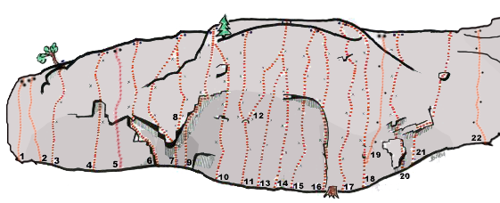
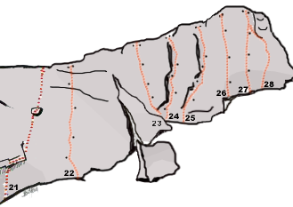
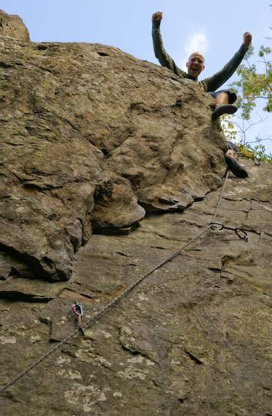
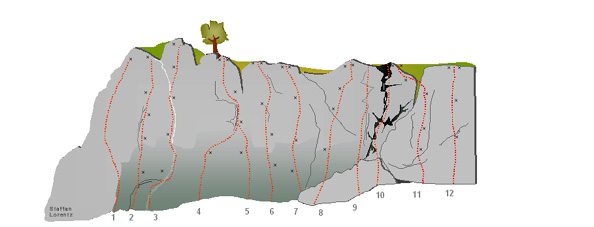
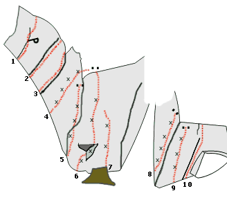
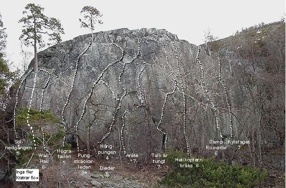

GPS: 59.40170,17.76257
En fin sportklätterklippa precis vid Mälarens strand. (Ta med badkläder!) Mest borrbultade leder och ett riktigt Mekka för den som klättrar graderna 6c-7b. Välsäkrat.
Kör E18 mot Oslo. Sväng av mot Viksjö. Följ Viksjöleden och sväng vänster in på Hummelmoravägen. Ta vänster in på Basunvägen och parkera på gästparkeringen. (Google-karta finner du på
egen sida
.) Gå cykelvägen mot skogen och förbi bommen. Följ stigen och korsa elljusspåret två gånger. Stigen går över en spång och 120 meter efter spången går delar sig stigen. Ta vänster här - stigen du följer är markerad med gula trianglar. Korsa grusvägen och följ gula trianglar/orangea ledmarkeringar. Efter ca 5 minuter kommer du till en ny väg, och ett träd med gul triangel+pil åt vänster samt orangemarkering+pil åt höger - ta höger och följ orange markeringar. Efter ca 20 meter, sväng vänster in på ny stig. Du är nu vid fornborgen. Håller du höger kommer du in i fornborgen, håller du vänster kommer du ner till Ravinen.
Det är lätt att orientera sig vid Gåseborg.
Ravinen
är det första du kommer till om du håller vänster vid fornborgen. Det går sedan att gå längst med vattnet och hålla lite höjd, så kommer man upp ungefär vid
Gula Väggen
.
Djävulsväggen
ligger då ca 75 meter norrut/åt vänster,
Ovanför ravinen
ett 20-tal meter söderut/åt höger. Går man mot vattnet från Ovanför ravinen kommer man till en eldstad som ligger precis ovanför Ravinens toppankare. Vill du istället direkt till Djävulsväggen för lite uppvärmning så håller du höger vid fornborgen.
Första delen av lederna är lätt överhängande och sedan går väggen över i brant sva. Flera ankare går att nå uppifrån.
Ravinen fortsättning... Denna del är den första du möter när du kommer till ravinen. Det går att komma åt ankare på merparten av dessa leder.
 Klippan, som i senaste Stockholmsföraren (1996!) kallades ”Överhängande väggen”, hade sedan tidigare tre rapporterade leder, tillika spår av tidigare aktivitet. Nu finns även ett antal fina sportleder, med borrbultar och firningsankare. Hit kan man bl a ta sig genom att gå rakt förbi eldstaden inne i fornborgen via en liten stig som efter lite scrambling leder direkt till vägggen. Den som vill nå ankarna från ovan, kan med största försiktighet klättra ned, via fornborgen på bergets topp. Fira sista biten, underlaget är löst vid klippans kant... Den branta delen är omkring 10 m hög.
20m till vänster om Ovanför Ravinen
Saknar toppankare, men två ordentliga tallar väger upp denna brist.
Kategori:Topprep
Kategori:Sport
Kategori:Trad
Kategori:Överhäng
Kategori:Vertikalt
Kategori:Sva
Kategori:Stockholm
Kategori:Norra Stockholm
Copyright (C) Permission is granted to copy, distribute and/or modify this document under the terms of the GNU Free Documentation License, Version 1.3